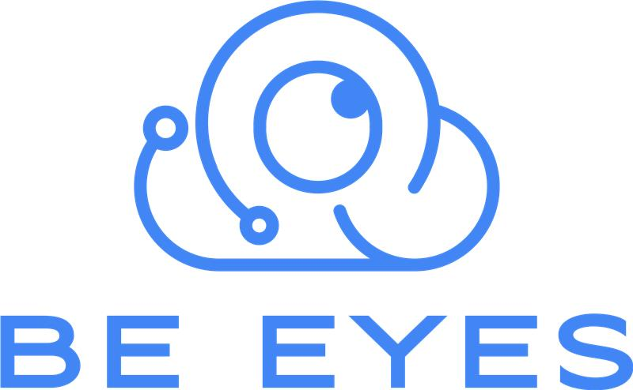
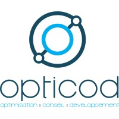

Ils nous ont fait confiance



Bénéficiez de tableaux de bord connectés en direct sur toutes vos sources de données afin de libérer leur potentiel.
B-Olaps est une plateforme complète d'analyse et visualisation de données, vous pouvez croiser vos données en direct venant de vos différents outils et les visualiser simplement.
Découvrir O-CubeB-Olaps vous fournit plusieurs types de présentation pour faire parler vos données : cartographies, tableaux croisés, secteurs, cartes de performances… Tous les éléments sont réunis pour transformer vos données en informations.
Avec B-Olaps, vous avez tous les outils nécessaires à l’exploitation de vos données. Construisez en quelques minutes des tableaux de bord directement connectés sur vos données.
O-Cube vous permet de vous connecter en direct sur toutes vos données.
O-Cube repose sur une technologie interne de croisement de données qui vous permet de fusionner des données diverses, à la volée, sans avoir à créer un entrepôt de données
Fort de leur expérience dans l’accompagnement digital,David, Thibaud et Thuan sont parti d’un constat simple : Nos clients disposent d’un grand nombre de données, mais peu d’entre eux savent les exploiter intégralement. Ils décident donc d’aider leurs clients dans le monde de la Big Data. Comment ? A l’aide d’O-Cube qui permet aux décisionnaires de construire les puzzles de leurs Datas Notre équipe est aujourd’hui composé de 5 personnes dédié à la création d’innovations et de valeurs ajoutées.
Afin de permettre aux utilisateurs de B-Olaps de tirer encore plus d’intelligence de leurs données, nous avons réalisé un moteur de machine learning automatisé. Vous pouvez faire des prédictions en un clic : prévision temporelle, classification, prédiction numérique (régression).
B-Olaps rend intelligible la masse de données accessible à vos utilisateurs. Notre solution offre toutes les principales représentations visuelles avec des indicateurs lisibles et complets. Nos tableaux de bord sont complètement interactifs et dynamiques.
Notre solution est pensée pour répondre aux problématiques de sécurités. Vous avez accès à des niveaux de granularité fin de gestion des droits (utilisateurs, connexion, jeux de données, tableaux de bord).